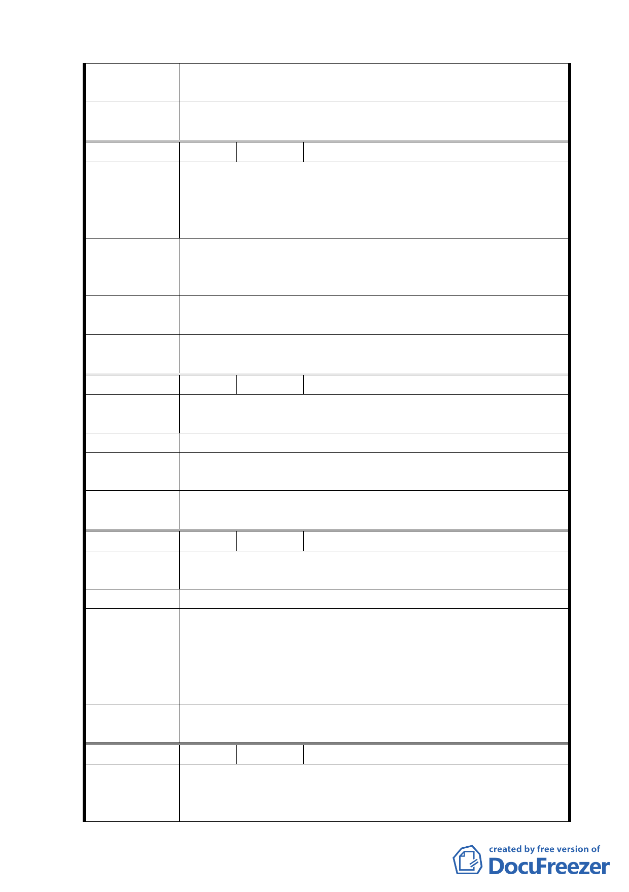

專案小組
審查結論
所提建議位置非本案計畫範圍，錄請市府另行檢討。
委員會決
議
同專案小組審查結論。
編 號 ４ 陳情人 陳明祥
一、土地標示：文山區老泉段一小段五 0 三地號。
陳情理由
二、本次區段徵收即將農業區之土地為徵收標的，全部之農
業區都應列入徵收範圍，不應以既成鄉道為區隔，對緊
鄰道路兩邊土地採取不同之徵收模式。
請將原有道路兩邊同為農業區之土地採取一致之原則，即請
建 議 辦 法 將申請人名下之標示土地併入本次區段徵收範圍內，統一規
劃辦理。
專 案 小 組 同意發展局所研議，將本保護區調整為道路用地及綠地，並
審 查 結 論 納入區段徵收開發。
委員會決
議
同專案小組審查結論。
編 號 ５ 陳情人 李怡慧
陳情理由
一、土地標示：文山區老泉段四小段二四三地號。
二、肯定貴會的計劃。
建 議 辦 法 土地分配問題大部份地主都希望 45％以上。
專 案 小 組 本案經地政處以發還土地比例 40％估算結果，財務上仍相
審 查 結 論 當困難；本建議錄請市府參考。
委員會決
議
同專案小組審查結論。
編 號 ６ 陳情人 李懿珊
陳情理由
一、土地標示：文山區老泉段四小段二四三地號。
二、土地規劃後希望分配到 45％以上。
建 議 辦 法 電力設施位置請設在公園邊角，商業景觀才不會受到影響。
一、本案經地政處以發還土地比例 40％估算結果，財務上
專案小組
審查結論
仍相當困難；本建議錄請市府參考。
二、電力設施用地規模及位置，係配合台電公司於本地區之
電力輸送需求配置，將於細部計畫劃設緩衝空間，減
低對環境景觀之影響。
委員會決
議
同專案小組審查結論。
編 號 ７ 陳情人 李宗龍
一、土地標示：文山區老泉段四小段二四四地號。
陳 情 理 由 二、土地重新規劃分配後，地主能分配到 45％以上。
三、電力設施影響商業區的利用。
九